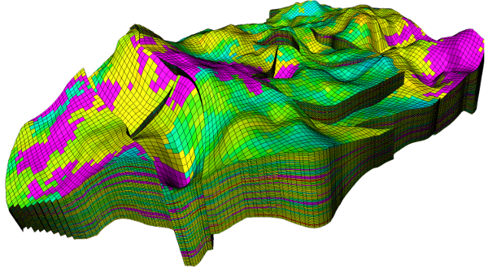
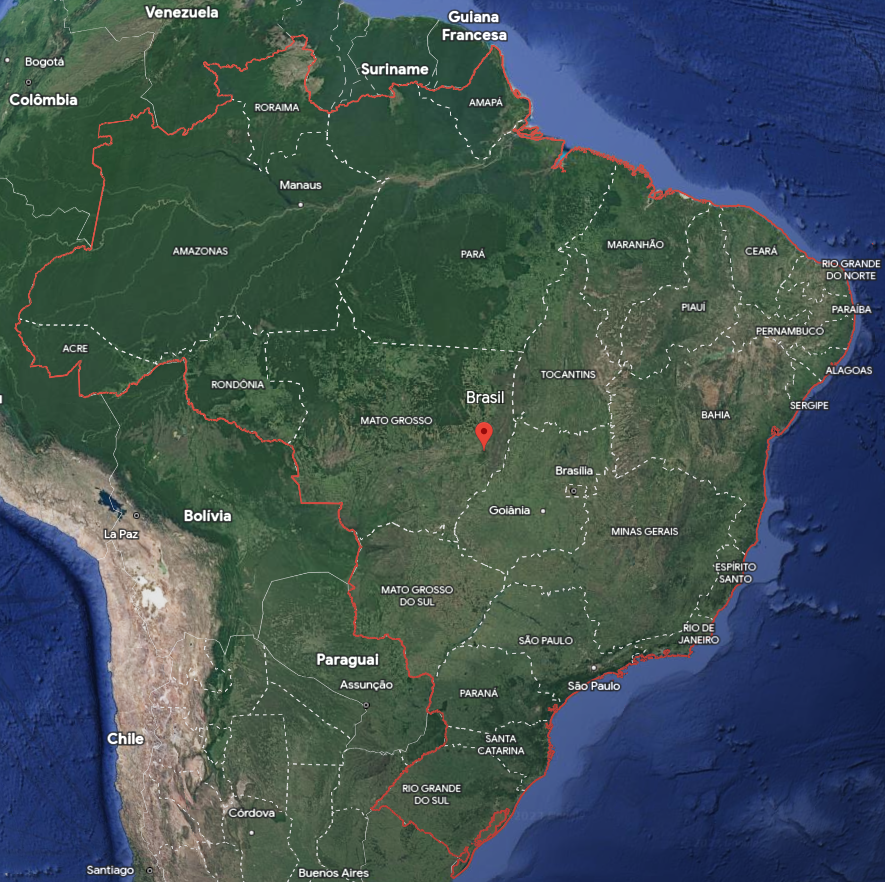

Welcome to Part I of the book. Before we can start our journey in geospatial data science, we need to introduce important concepts, which will be the foundations of Part II, Part III and Part IV.
In this chapter, we define geospatial data and introduce a universal representation for it which is ideal for geostatistical analysis. Unlike other representations in the literature (e.g., “raster”, “vector” data), the proposed representation is suitable for encoding geospatial data over 3D unstructured meshes, 2D images embedded in 3D space, and other types of complex geospatial domains.
1.1 Definition
Definition
(Discrete) geospatial data is the combination of a table of attributes (or features) with a discretization of a geospatial domain. Each row (or measurement) in the table corresponds to an element (or geometry) in the discretization of the geospatial domain.
The definition depends on two other definitions that we clarify next.
1.1.1 Table
In data science the most natural data structure for working with data is the table. Generally speaking, a table is any object that can be structured into rows containing measurements and columns representing variables. For example, Table 1.1 has 5 measurements of 4 variables:
Table 1.1: Example of table
NAME
AGE
HEIGHT
GENDER
John
34
1.78m
male
Mary
12
1.56m
female
Paul
23
1.70m
male
Anne
39
1.80m
female
Kate
28
1.72m
female
In Julia, the concept of table is formalized in Tables.jl by Quinn et al. (2023). The definition is independent of the machine representation, and various representations can co-exist in the language.
1.1.2 Domain
The second definition that we need is that of a geospatial domain. In geosciences, questions are often formulated within a physical region of interest. This physical region can cover a small area of the surface of the Earth, the entire Earth surface, or any region of finite measure that can be discretized into smaller geometries (a.k.a. elements):
(a) Coast line in Islay Province, Peru. View on Google Maps

(b) Synthetic carbonate reservoir model by Correia et al. (2015). See UNISIM-II for more details
Figure 1.1: Example of geospatial domains
Figure 1.1 illustrates two very different examples of geospatial domains. The domain in Figure 1.1 (a) is widely studied in GIS books. It is a 2D domain that contemplates a small area near Islay Province, Peru. The domain in Figure 1.1 (b) on the other hand is not considered in traditional GIS literature. It is a 3D domain that has been discretized into hexahedron geometries.
The concept of geospatial domain is formalized in Meshes.jl by Hoffimann et al. (2021).
1.1.3 Remarks
Images like the one depicted in Figure 1.1 (a) are often implemented in terms of the array data structure. GIS books call it “raster data”, but we will avoid this term in our framework in order to obtain a more general set of tools.
According to our definition of geospatial data, “raster data” is simply a table with colors as variables (e.g., RGB values) combined with a grid of quadrangle geometries. We illustrate this concept in Figure 1.2 by zooming in a satellite image of the Lena delta:
Figure 1.2: Quadrangle geometries in “raster data”
There are no constraints on the geometries used in the discretization of the geospatial domain. In Figure 1.3, Brazil is discretized into complex polygonal geometries that represent country states:

Figure 1.3: Brazil’s states represented with complex polygonal geometries. View on Google Maps.
GIS books call it “vector data” because the geometries are stored as vectors of coordinates in memory. We will also avoid this term in our framework given that it only highlights an implementation detail.
Before we start discussing machine representation with actual Julia code, let’s make a final (pedantic) distinction between the words geospatial and spatial. These words mean different things in different communities:
In geosciences, an object is geospatial if it lives in physical space.
In statistics, a model is spatial if it exploits the vicinity of samples in the sample space.
Given that geospatial data science deals with both concepts, we must use these words carefully.
Note
In Geostatistical Learning, models can exploit both spaces to improve prediction performance, but that is out of the scope for this book.
1.2 Representation
Based on the definition of geospatial data given in the previous section, we are now ready to proceed and discuss an efficient machine representation for it with actual Julia code.
1.2.1 Table
The Julia language comes with two built-in table representations:
Named tuple of vectors
Vector of named tuples
The first representation focuses on the columns of the table:
Given that data science is often performed with entire columns, this column-major representation of a table is very convenient. The second representation focuses on the rows of the table:
The row-major representation can be useful to process data that is potentially larger than the available computer memory, or infinite streams of data.
Although these two representations come built-in with Julia, they lack basic functionality for data science. The most widely used table representation for data science in Julia is available in DataFrames.jl by Bouchet-Valat and Kamiński (2023).
Unlike other languages, Julia makes a distinction between the the symbol :HEIGHT and the string "HEIGHT". The DataFrame representation supports both types for column names, but that is not always the case with other table representations.
Other popular table representations in Julia are associated with specific file formats:
4-element Vector{Geometry{𝔼{2}, Cartesian2D{NoDatum, Quantity{Float64, 𝐋, Unitful.FreeUnits{(m,), 𝐋, nothing}}}}}:
Point(x: 1.0 m, y: 2.0 m)
Segment((x: 0.0 m, y: 2.0 m), (x: 1.0 m, y: 3.0 m))
Triangle((x: 0.0 m, y: 0.0 m), (x: 1.0 m, y: 0.0 m), (x: 1.0 m, y: 1.0 m))
Ball(center: (x: 2.0 m, y: 2.0 m), radius: 1.0 m)
Because these geometries are unaware of each other, we place them into a GeometrySet, informally known in computational geometry as the “soup of geometries” data structure:
gset =GeometrySet(geoms)
4 GeometrySet
├─ Point(x: 1.0 m, y: 2.0 m)
├─ Segment((x: 0.0 m, y: 2.0 m), (x: 1.0 m, y: 3.0 m))
├─ Triangle((x: 0.0 m, y: 0.0 m), (x: 1.0 m, y: 0.0 m), (x: 1.0 m, y: 1.0 m))
└─ Ball(center: (x: 2.0 m, y: 2.0 m), radius: 1.0 m)
No advanced knowledge is required to start working with these geometries. For example, we can compute the length of the Segment, the area of the Triangle and the area of the Ball with:
length(s), area(t), area(b)
(1.4142135623730951 m, 0.5 m^2, 3.141592653589793 m^2)
More generally, we can compute the measure of the geometries in the domain:
[measure(g) for g in gset]
4-element Vector{Quantity{Float64}}:
0.0 m
1.4142135623730951 m
0.5 m^2
3.141592653589793 m^2
In the example above, we iterated over the domain to apply the function of interest, but we could have used Julia’s dot syntax for broadcasting the function over the geometries:
measure.(gset)
4-element Vector{Quantity{Float64}}:
0.0 m
1.4142135623730951 m
0.5 m^2
3.141592653589793 m^2
The list of supported geometries is very comprehensive. It encompasses all geometries from the simple features standard and more. We will see more examples in the following chapters.
One of the main limitations of GIS software today is the lack of explicit representation of topology. A GeometrySet does not provide efficient topological relations (Floriani and Hui 2007), yet advanced geospatial data science requires the definition of geospatial domains where geometries are aware of their neighbors. Let’s illustrate this concept with the CartesianGrid domain:
grid =CartesianGrid(10, 10)
10×10 CartesianGrid
├─ minimum: Point(x: 0.0 m, y: 0.0 m)
├─ maximum: Point(x: 10.0 m, y: 10.0 m)
└─ spacing: (1.0 m, 1.0 m)
We can access the individual geometries of the domain as before:
grid[1]
Quadrangle
├─ Point(x: 0.0 m, y: 0.0 m)
├─ Point(x: 1.0 m, y: 0.0 m)
├─ Point(x: 1.0 m, y: 1.0 m)
└─ Point(x: 0.0 m, y: 1.0 m)
And even though we can manipulate this domain as if it was a “soup of geometries”, the major advantage in this abstraction is the underlying topology:
topo =topology(grid)
10×10 GridTopology(aperiodic, aperiodic)
This data structure can be used by advanced users who wish to design algorithms with neighborhood information. We will cover this topic in a separate chapter. For now, keep in mind that working with the entire domain as opposed to with a vector or “soup of geometries” has major benefits.
Note
The CartesianGrid domain is lazy, meaning it only stores the start and end points of the grid together with the spacing between the elements. Therefore, we can easily create large 3D grids of Hexahedron geometries without consuming all available memory:
grid =CartesianGrid(10000, 10000, 10000)
10000×10000×10000 CartesianGrid
├─ minimum: Point(x: 0.0 m, y: 0.0 m, z: 0.0 m)
├─ maximum: Point(x: 10000.0 m, y: 10000.0 m, z: 10000.0 m)
└─ spacing: (1.0 m, 1.0 m, 1.0 m)
grid[1]
Hexahedron
├─ Point(x: 0.0 m, y: 0.0 m, z: 0.0 m)
├─ Point(x: 1.0 m, y: 0.0 m, z: 0.0 m)
├─ Point(x: 1.0 m, y: 1.0 m, z: 0.0 m)
├─ Point(x: 0.0 m, y: 1.0 m, z: 0.0 m)
├─ Point(x: 0.0 m, y: 0.0 m, z: 1.0 m)
├─ Point(x: 1.0 m, y: 0.0 m, z: 1.0 m)
├─ Point(x: 1.0 m, y: 1.0 m, z: 1.0 m)
└─ Point(x: 0.0 m, y: 1.0 m, z: 1.0 m)
In computational geometry, a CartesianGrid is a specific type of mesh. It can only represent “flat” domains sampled regularly along each dimension (e.g., images). To represent domains with curvature such as terrain elevation models or complex 3D domains like the one in Figure 1.1 (b), we can use the SimpleMesh domain:
# global vector of 2D pointspoints = [(0.0, 0.0), (1.0, 0.0), (0.0, 1.0), (1.0, 1.0), (0.25, 0.5), (0.75, 0.5)]# connect the points into N-gonsconnec =connect.([(1, 2, 6, 5), (2, 4, 6), (4, 3, 5, 6), (3, 1, 5)])# 2D mesh made of N-gon elementsmesh =SimpleMesh(points, connec)
4 SimpleMesh
6 vertices
├─ Point(x: 0.0 m, y: 0.0 m)
├─ Point(x: 1.0 m, y: 0.0 m)
├─ Point(x: 0.0 m, y: 1.0 m)
├─ Point(x: 1.0 m, y: 1.0 m)
├─ Point(x: 0.25 m, y: 0.5 m)
└─ Point(x: 0.75 m, y: 0.5 m)
4 elements
├─ Quadrangle(1, 2, 6, 5)
├─ Triangle(2, 4, 6)
├─ Quadrangle(4, 3, 5, 6)
└─ Triangle(3, 1, 5)
The connect function takes a tuple of indices and a geometry type, and produces a connectivity object. The geometry type can be omitted, in which case it is assumed to be a Ngon, i.e., a polygon with N sides:
c =connect((1, 2, 3))
Triangle(1, 2, 3)
This connectivity object can be materialized into an actual geometry with a vector of points:
Triangle
├─ Point(x: 0.0 m, y: 0.0 m)
├─ Point(x: 1.0 m, y: 0.0 m)
└─ Point(x: 1.0 m, y: 1.0 m)
The SimpleMesh uses the materialize function above to construct geometries on the fly, similar to what we have seen with the CartesianGrid:
mesh[1]
Quadrangle
├─ Point(x: 0.0 m, y: 0.0 m)
├─ Point(x: 1.0 m, y: 0.0 m)
├─ Point(x: 0.75 m, y: 0.5 m)
└─ Point(x: 0.25 m, y: 0.5 m)
Don’t worry if you feel overwhelmed by these concepts. We are only sharing them here to give you an idea of how complex 3D domains are represented in the framework. You can do geospatial data science without ever having to operate with these concepts explicitly.
Let’s make a few important remarks:
Flexibility comes with a price. To construct a SimpleMesh of connected geometries we need to explicitly create a vector of vertices, and connect these vertices into geometries using their indices in the vector.
Geometries in a SimpleMesh can be of different type. In the example, we have both Triangle and Quadrangle geometries in the domain. This is similar to what we had with GeometrySet, but now the geometries are connected.
SimpleMesh are rarely constructed by hand. They are often the result of a sophisticated geometric processing pipeline that is already stored in a file on disk.
The last missing piece of the puzzle is the combination of tables with domains into geospatial data, which we discuss next.
1.2.3 Data
Wouldn’t it be nice if we had a representation of geospatial data that behaved like a table as discussed in the Tables section, but preserved topological information as discussed in the Domains section? In the GeoStats.jl framework, this is precisely what we get with the georef function:
Quadrangle((x: 0.0 m, y: 0.0 m), ..., (x: 0.0 m, y: 1.0 m))
Mary
12.0 yr
1.56 m
female
Quadrangle((x: 1.0 m, y: 0.0 m), ..., (x: 1.0 m, y: 1.0 m))
Paul
23.0 yr
1.7 m
male
Quadrangle((x: 0.0 m, y: 1.0 m), ..., (x: 0.0 m, y: 2.0 m))
Anne
39.0 yr
1.8 m
female
Quadrangle((x: 1.0 m, y: 1.0 m), ..., (x: 1.0 m, y: 2.0 m))
Tip for all users
The framework is integrated with the Unitful.jl module. To add the unit “meter” to the numeric value 1.0, we can write 1.0u"m". Similarly, we can add units to vectors of values:
[1.0, 2.0, 3.0]u"m"
3-element Vector{Quantity{Float64, 𝐋, Unitful.FreeUnits{(m,), 𝐋, nothing}}}:
1.0 m
2.0 m
3.0 m
It is also possible to load units explicitly to avoid the “u” prefix:
usingUnitful: m, ft1.0m +2.0ft
The function combines any table with any domain into a geospatial data representation that adheres to the Tables.jl interface. We call this representation a GeoTable to distinguish it from a standard table. Besides the original columns, the GeoTable has a special geometry column with the underlying domain:
Unlike a standard table, the GeoTable creates geometries on the fly depending on the data access pattern. For example, we can request the first measurement of the GeoTable and it will automatically construct the corresponding Quadrangle:
geotable[1,:]
(NAME = "John", AGE = 34.0 yr, HEIGHT = 1.78 m, GENDER = "male", geometry = Quadrangle((x: 0.0 m, y: 0.0 m), ..., (x: 0.0 m, y: 1.0 m)))
If we request a subset of measurements, the GeoTable will avoid unnecessary creation of geometries, and will instead return a view into the original data:
geotable[1:3,["NAME","AGE"]]
3×3 GeoTable over 3 view(::CartesianGrid, 1:3)
NAME
AGE
geometry
Categorical
Continuous
Quadrangle
[NoUnits]
[yr]
🖈 Cartesian{NoDatum}
John
34.0 yr
Quadrangle((x: 0.0 m, y: 0.0 m), ..., (x: 0.0 m, y: 1.0 m))
Mary
12.0 yr
Quadrangle((x: 1.0 m, y: 0.0 m), ..., (x: 1.0 m, y: 1.0 m))
Paul
23.0 yr
Quadrangle((x: 0.0 m, y: 1.0 m), ..., (x: 0.0 m, y: 2.0 m))
Finally, if we request the entire geometry column, we get back the original domain:
geotable[:,"geometry"]
2×2 CartesianGrid
├─ minimum: Point(x: 0.0 m, y: 0.0 m)
├─ maximum: Point(x: 2.0 m, y: 2.0 m)
└─ spacing: (1.0 m, 1.0 m)
Besides the data access patterns of the DataFrame, the GeoTable also provides an advanced method for retrieving all rows that intersect with a given geometry:
geotable[Segment((0, 0), (2, 0)), :]
2×5 GeoTable over 2 view(::CartesianGrid, [1, 2])
NAME
AGE
HEIGHT
GENDER
geometry
Categorical
Continuous
Continuous
Categorical
Quadrangle
[NoUnits]
[yr]
[m]
[NoUnits]
🖈 Cartesian{NoDatum}
John
34.0 yr
1.78 m
male
Quadrangle((x: 0.0 m, y: 0.0 m), ..., (x: 0.0 m, y: 1.0 m))
Mary
12.0 yr
1.56 m
female
Quadrangle((x: 1.0 m, y: 0.0 m), ..., (x: 1.0 m, y: 1.0 m))
This method is very useful to narrow the region of interest and quickly discard all measurements that are outside of it. For instance, it is common to discard all “pixels” outside of a polygon before exporting the geotable to a file on disk.
Notice that the GeoTable representation is general enough to accommodate both “raster data” and “vector data” in traditional GIS. We can create very large rasters because the CartesianGrid is lazy:
Quadrangle((x: 0.0 m, y: 0.0 m), ..., (x: 0.0 m, y: 1.0 m))
0.0768099
0.360556
0.696905
Quadrangle((x: 1.0 m, y: 0.0 m), ..., (x: 1.0 m, y: 1.0 m))
0.755699
0.865219
0.94207
Quadrangle((x: 2.0 m, y: 0.0 m), ..., (x: 2.0 m, y: 1.0 m))
0.356312
0.568599
0.183214
Quadrangle((x: 3.0 m, y: 0.0 m), ..., (x: 3.0 m, y: 1.0 m))
0.0416436
0.908054
0.81472
Quadrangle((x: 4.0 m, y: 0.0 m), ..., (x: 4.0 m, y: 1.0 m))
0.307884
0.0278525
0.797485
Quadrangle((x: 5.0 m, y: 0.0 m), ..., (x: 5.0 m, y: 1.0 m))
0.160997
0.347545
0.821407
Quadrangle((x: 6.0 m, y: 0.0 m), ..., (x: 6.0 m, y: 1.0 m))
0.105164
0.864775
0.932135
Quadrangle((x: 7.0 m, y: 0.0 m), ..., (x: 7.0 m, y: 1.0 m))
0.893729
0.926942
0.121959
Quadrangle((x: 8.0 m, y: 0.0 m), ..., (x: 8.0 m, y: 1.0 m))
0.931505
0.114928
0.933457
Quadrangle((x: 9.0 m, y: 0.0 m), ..., (x: 9.0 m, y: 1.0 m))
⋮
⋮
⋮
⋮
And can load vector geometries from files that store simple features using the GeoIO.jl module:
usingGeoIOGeoIO.load("data/countries.geojson")
177×3 GeoTable over 177 GeometrySet
COUNTRY
REGION
geometry
Categorical
Categorical
MultiPolygon
[NoUnits]
[NoUnits]
🖈 GeodeticLatLon{WGS84Latest}
Fiji
Melanesia
Multi(3×PolyArea)
Tanzania
Eastern Africa
Multi(1×PolyArea)
W. Sahara
Northern Africa
Multi(1×PolyArea)
Canada
Northern America
Multi(30×PolyArea)
United States of America
Northern America
Multi(10×PolyArea)
Kazakhstan
Central Asia
Multi(1×PolyArea)
Uzbekistan
Central Asia
Multi(1×PolyArea)
Papua New Guinea
Melanesia
Multi(4×PolyArea)
Indonesia
South-Eastern Asia
Multi(13×PolyArea)
Argentina
South America
Multi(2×PolyArea)
⋮
⋮
⋮
Note
The “data” folder is stored on GitHub. Check the Preface for download instructions.
We will see more examples of “vector data” in the chapter Interfacing with GIS, and will explain why file formats like Shapefile.jl and GeoJSON.jl are not enough for advanced geospatial data science.
Tip for all users
The GeoStats.jl module reexports the full stack of modules for geospatial data science in Julia. There is no need to import modules like Meshes.jl explicitly. You are all set if you start your script with
usingGeoStats
Tip for advanced users
In Julia, a function is type-stable if the return type is known at compile time. Since the GeoTable has columns from the original table (e.g., numbers) and an additional special geometry column, the access to the data with the DataFrame syntax is not type stable. If you need to write type-stable code, use the functions values and domain instead:
values(geotable)
4×4 DataFrame
Row
NAME
AGE
HEIGHT
GENDER
String
Quantity…
Quantity…
String
1
John
34.0 yr
1.78 m
male
2
Mary
12.0 yr
1.56 m
female
3
Paul
23.0 yr
1.7 m
male
4
Anne
39.0 yr
1.8 m
female
domain(geotable)
2×2 CartesianGrid
├─ minimum: Point(x: 0.0 m, y: 0.0 m)
├─ maximum: Point(x: 2.0 m, y: 2.0 m)
└─ spacing: (1.0 m, 1.0 m)
1.3 Remarks
What did we learn in this chapter?
Geospatial data can be efficiently represented as a GeoTable. This representation is universal, meaning it combines the “raster” and “vector” representations found in traditional GIS.
A GeoTable provides all the data access patterns of a DataFrame. In particular, it supports the syntax geotable[rows,cols] without expensive copies of geometries.
Working with geospatial domains as opposed to working with vectors of disconnected geometries has major benefits. In particular, it preserves topological information.
It is very convenient to manipulate a GeoTable as if it was a DataFrame. Nevertheless, we will learn that advanced geospatial data science requires higher-level constructs to preserve geospatial information. We will cover these constructs in Part II and Part III of the book.
Bouchet-Valat, Milan, and Bogumił Kamiński. 2023. “DataFrames.jl: Flexible and Fast Tabular Data in Julia.”Journal of Statistical Software 107 (4): 1–32. https://doi.org/10.18637/jss.v107.i04.
Correia, M.., J.. Hohendorff, A. T. Gaspar, and D.. Schiozer. 2015. UNISIM-II-D: Benchmark Case Proposal Based on a Carbonate Reservoir. Vol. Day 3 Fri, November 20, 2015. SPE Latin America and Caribbean Petroleum Engineering Conference. https://doi.org/10.2118/177140-MS.
Floriani, L. De, and A. Hui. 2007. “Shape Representations Based on Simplicial and Cell Complexes.” In Eurographics 2007 - State of the Art Reports, edited by Dieter Schmalstieg and Jiri Bittner. The Eurographics Association. https://doi.org/10.2312/egst.20071055.
Hoffimann, Júlio, Maciel Zortea, Breno de Carvalho, and Bianca Zadrozny. 2021. “Geostatistical Learning: Challenges and Opportunities.”Frontiers in Applied Mathematics and Statistics 7. https://doi.org/10.3389/fams.2021.689393.
Quinn, Jacob, Bogumił Kamiński, David Anthoff, Milan Bouchet-Valat, Tamas K. Papp, Takafumi Arakaki, Rafael Schouten, et al. 2023. “JuliaData/Tables.jl: V1.10.1.” Zenodo. https://doi.org/10.5281/zenodo.7730968.